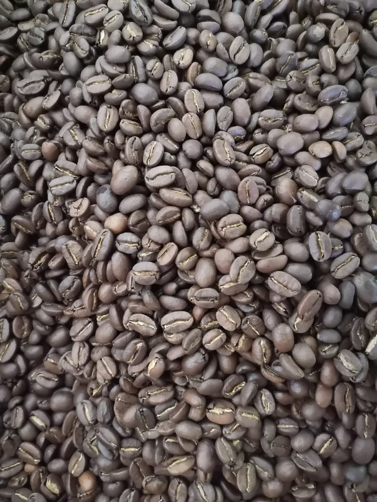
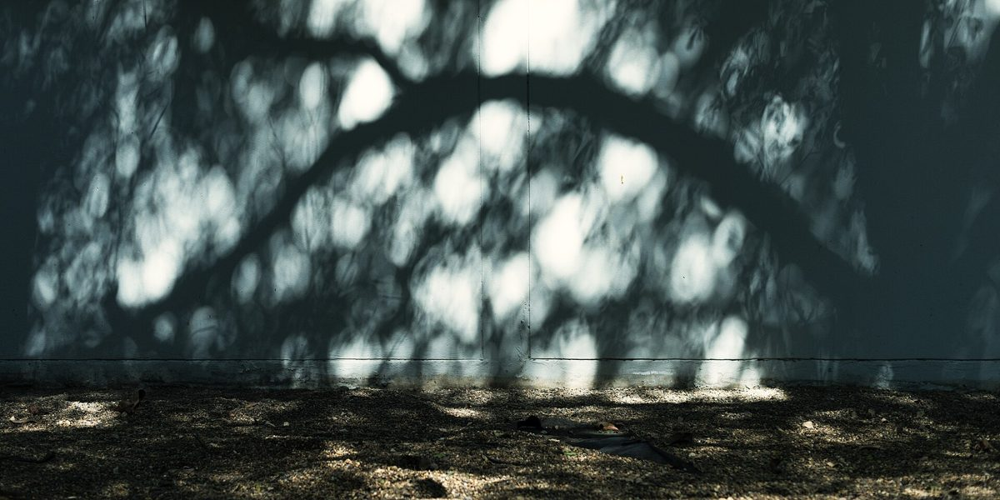
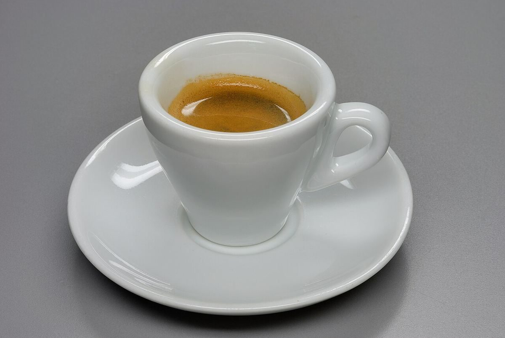

店のこと
店のこと
お店について確認できているのは、所在地とInstagramのアカウントだけです。
確認できていること
- 店名は「NISHIKINO CAFE」、業種はカフェ
- 所在地は宮城県仙台市青葉区錦町1丁目4-9
- 電話番号はなし。連絡はInstagramから
- 営業時間・定休日・メニュー・価格・ご予約・駐車場は準備中
制作側の連想(お店とは無関係)
1と4と9の写真帖
ここから下は、数字遊びのための写真です。制作側の連想で、お店の理念・由来・実際の様子とは関係がありません。
1 = 1×1

4 = 2×2




9 = 3×3





どの写真も国外または撮影地不明のフリー素材のイメージです。